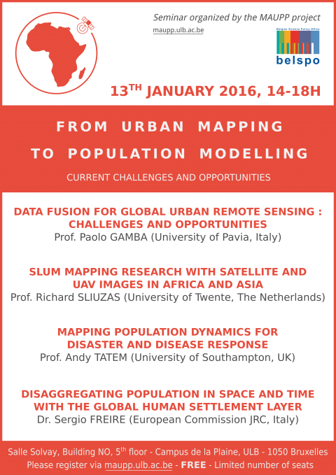

This seminar is organized by the MAUPP project, and funded by the BELSPO STEREO III Program.
## Practical informations
The event will take place on 13th January 2015, between 2 and 6 PM, at the Salle Solvay, Building NO, 5th floor (Campus de la Plaine, ULB - 1050 Brussels).
Registration is free, but the number of seats is limited.
An access map is available on the ULB website.
## Program
2:00 Introduction
2:15 Data fusion for global urban remote sensing : challenges and opportunities Prof. Paolo GAMBA (University of Pavia, Italy)
3:00 Slum mapping research with satellite and UAV images in Africa and Asia Prof. Richard SLIUZAS (University of Twente, Netherlands)
3:45 Coffee break
4:00 Mapping population dynamics for disaster and disease response Prof. Andy TATEM (University of Southampton, UK)
4:45 Disaggregating population in space and time with the Global Human Settlements Layer Dr. Sergio FREIRE (European Commission Joint Research Center, Italy)
5:30 Informal discussions and networking Contact
For any question about the event, please contact us : clinard@ulb.ac.be
Published on November 30, 2015, by Catherine Linard